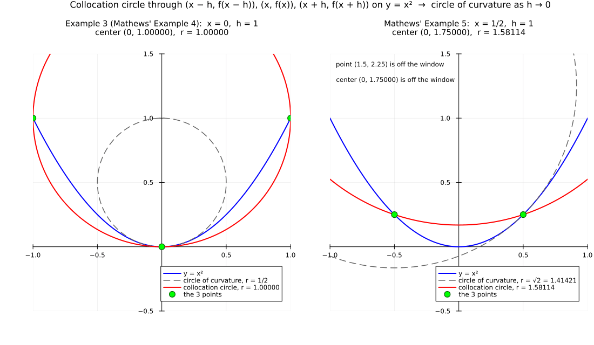
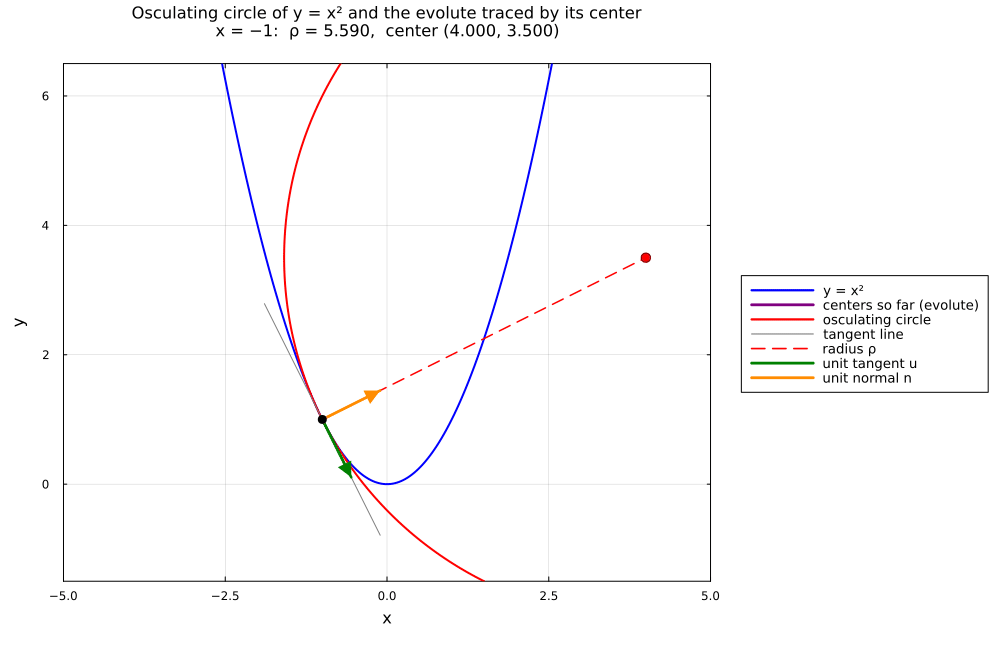

Circle of Curvature
Source inspiration: (Mathew 2000-2019).
Description
The circle of curvature, or osculating circle, of a plane curve at a point is the circle that fits the curve best there. It passes through the point, shares the curve’s tangent line there, and bends at the same rate. Its radius is the radius of curvature \(|\rho|\), the reciprocal of the curvature \(|\kappa|\). Its center lies on the normal line, on the side toward which the curve bends. A circle of radius \(R\) has curvature \(1/R\) at every point, and a straight line has curvature \(0\).
Mathews constructs it as a limit. Take the three points of the curve \(y = f(x)\) at \(x-h\), \(x\) and \(x+h\), and draw the circle through them, the collocation circle. As \(h \to 0\) the difference quotients in its center and radius tend to \(f'(x)\) and \(f''(x)\), and for a twice-differentiable \(f\) with \(f''(x) \ne 0\) the collocation circle tends to the osculating circle, with
\[ \rho(x)=\frac{\left(1+f'(x)^2\right)^{3/2}}{f''(x)}, \qquad (a,b)=\bigl(x,f(x)\bigr)+\rho(x)\,\widehat{\mathbf{n}}(x), \]
where \(\widehat{\mathbf{n}}=(-f',1)/\sqrt{1+f'^2}\) is the unit normal. These are formulas (1) to (4) below. For a parametric curve \(\bigl(x(t),y(t)\bigr)\) the same limit gives formulas (6) and (7). As the point moves along the curve, the center of curvature traces another curve, the evolute.
Animations
The first animation shows Mathews’ construction. The collocation circle through three points of \(y = x^2\) closes in on the circle of curvature as \(h \to 0\). The other two roll the osculating circle along a curve, the parabola \(y = x^2\) and the cardioid of Examples 4 and 5. Each frame shows the point, the unit tangent and unit normal, the radius to the center of curvature, and the circle. The centers visited so far trace the evolute in purple.
Mathews’ module has two animations, both of collocation circles on \(y = x^2\). His animation archive has none for this module. The 19 frames of his Example 5 animation, at the point \((\tfrac12, \tfrac14)\), survive as still images in the module. Case 1 rebuilds it with his values of \(h\), his window \([-1, 1] \times [-0.5, 1.5]\) and his colors (blue parabola, red circle, green points). The frames and code of his Example 4 animation, at the origin (the page’s Example 3), are lost. Case 1 rebuilds it in a second panel with the same values of \(h\) and the same window. Cases 2 and 3 are new, with no Mathews original. Mathews states his Examples 2 and 3 at the point \((1, 1)\), but his solutions compute at \((\tfrac12, \tfrac14)\), where the center is \((-\tfrac12, \tfrac54)\) and the radius \(\sqrt2\). The page’s Example 2 works at \((1, 1)\), and Case 2 pauses at both points. His Example 6 uses \(t = \pi/3, 2\pi/3, \pi\), while the page’s Example 4 uses \(\pi/2\) in place of \(\pi/3\), and Case 3 pauses at all four. Some things are not animated. Example 1’s comparison of the circle of curvature at the origin with two other tangent circles, of radii \(\tfrac14\) and \(1\), stays as static pictures in Mathews’ module. Mathews’ static pictures of the tangent and normal (his Example 2) and of the circle at \((\tfrac12, \tfrac14)\) (his Example 3) appear only as the paused frame of Case 2 at \(x = \tfrac12\). His derivations of the radius and center formulas, some of whose images are lost, are algebra and are not animated. The sign of the radius in Example 5 is not animated either: the circle does not depend on the orientation, and Case 3 shows it.
Julia source scripts that generated these animations are linked under each case.
Case 1 — Collocation circles on \(y = x^2\) at \(x = 0\) (Example 3) and \(x = \tfrac12\) (Mathews’ Example 5), \(h\) from \(1\) down to \(0.001\)
Behavior: For \(y = x^2\) the circle through the points at \(x-h\), \(x\) and \(x+h\) has center \(\bigl(x(h^2-4x^2),\ \tfrac12(1+6x^2+h^2)\bigr)\). As \(h\) shrinks, the center moves in a straight line to the center of curvature, and its distance from it is \(h^2\sqrt{x^2+\tfrac14}\). At \(x = 0\) the center \(\bigl(0, \tfrac12(1+h^2)\bigr)\) slides down the \(y\)-axis. The radius \(\tfrac12(1+h^2)\) passes \(1\), \(0.505\) and \(0.50005\) at \(h = 1, 0.1, 0.01\), the values of Example 3. At \(x = \tfrac12\) the center \(\bigl(-\tfrac12+\tfrac12h^2,\ \tfrac54+\tfrac12h^2\bigr)\) moves along a line of slope \(1\) toward \((-\tfrac12, \tfrac54)\). The radius \(\sqrt{2 + h^4/2}\) converges faster: at \(h = 0.1\) it is only \(1.8\times10^{-5}\) above \(\sqrt2\). For this parabola the \(h^2\) term of the radius vanishes at \(x = \pm\tfrac12\), so the radius error falls like \(h^4\) there. In both panels the radius decreases with every smaller \(h\) and stays above its limit. In the right-hand panel (\(x = \tfrac12\)), for \(h \ge 0.7\) the right-hand point lies outside the window, and for \(h \ge 0.8\) so does the center. The frame says so, and the titles give the centers and radii to six figures. Mathews’ list of \(h\) skips \(0.6\), and it is kept here. The dashed circle of curvature is added here: Mathews’ frames do not draw it.

Case 2 — The osculating circle rolling along \(y = x^2\), \(-1 \le x \le 1\) (Examples 1 and 2)
Behavior: The radius \(\rho = \tfrac12(1+4x^2)^{3/2}\) is smallest, \(\tfrac12\), at the vertex (Example 1). It grows with \(|x|\) to \(5\sqrt5/2 = 5.590\) at \(x = \pm1\) (Example 2), so the circles with \(|x| \ge 0.8\) run past the edge of the window. The center \((-4x^3,\ \tfrac12 + 3x^2)\) lies on the upward normal, above the point itself, on the side toward which the parabola bends, and it moves the opposite way to the point. It lies inside the parabola only for \(|x| < 1/\sqrt2\): the evolute crosses the parabola at \((\pm\sqrt2,\,2)\), and for \(|x| > 1/\sqrt2\), as at \(x = 1\), the center is outside it. While the point comes down the left half of the parabola, the center comes down the right branch of the evolute, a semicubical parabola. It reaches the evolute’s cusp \((0, \tfrac12)\) as the point passes the vertex, then climbs the left branch. The radius is tangent to the evolute at the center, because the evolute’s direction \((-12x^2, 6x) = 6x(-2x, 1)\) is along the normal. The animation pauses at \(x = 0\), at \(x = \tfrac12\) and at \(x = 1\). At \(x = \tfrac12\), the point of Mathews’ Examples 3 and 5, the center is \((-\tfrac12, \tfrac54)\) and the radius \(\sqrt2\). At \(x = 1\) the center is \((-4, \tfrac72)\). The window is chosen here and holds every center.

Case 3 — The osculating circle rolling around the cardioid \(x = 2\cos t - \cos 2t\), \(y = 2\sin t - \sin 2t\) (Examples 4 and 5), \(t = \pi/24, 2\pi/24, \ldots, 47\pi/24\)
Behavior: Here \(f'g''-g'f'' = 12(1-\cos t) > 0\) for \(0 < t < 2\pi\), so the curve is positively oriented and (6) gives \(r = \tfrac83|\sin(t/2)|\). The radius grows from \(0.1744\) at \(t = \pi/24\) to \(\tfrac83\) at \(t = \pi\), where the point is \((-3, 0)\). It then shrinks back to \(0.1744\) at \(t = 47\pi/24\). At the cusp \((1, 0)\), \(t = 0\), the speed is zero and (6) and (7) are \(0/0\), so that frame is left out. The centers trace the evolute \(\mathbf{c}(t) = -\tfrac13\,\mathbf{p}(t+\pi)\), which is the cardioid shrunk by a factor of \(3\) and turned through half a turn about the origin. They start near the cusp \((1, 0)\) and reach the evolute’s own cusp \((-\tfrac13, 0)\) at \(t = \pi\), when the circle is largest, then return. Every center lies along the unit normal, the left normal of the counterclockwise curve. The tangent and normal arrows are drawn \(0.6\) long. The animation pauses at Mathews’ \(t = \pi/3\) and at \(t = \pi/2, 2\pi/3, \pi\) of Example 4. It also pauses at \(t = 5\pi/3\), at the point \((\tfrac32, -\tfrac{\sqrt3}{2})\) of Example 5. The reversed parameterization of Example 5 reaches this point at \(t = \pi/3\), and its signed radius there is \(-\tfrac43\). The circle is the same, with center \((\tfrac16, -\tfrac{\sqrt3}{2})\) and radius \(\tfrac43\). Mathews’ window \([-3, 2.5] \times [-2.75, 2.75]\) is widened to \([-3.25, 2.5] \times [-2.875, 2.875]\), so that the point \((-3, 0)\) is not on its edge, and every circle fits inside it.

Curvature for y = f(x)
For a twice-differentiable curve \(y=f(x)\),
\[ \kappa(x)=\frac{f''(x)}{\left(1+\left(f'(x)\right)^2\right)^{3/2}}, \qquad \rho(x)=\frac{\left(1+\left(f'(x)\right)^2\right)^{3/2}}{f''(x)}. \tag{1} \]
Geometrically, \(|\rho(x)|\) is the radius of the osculating circle.
Given \(y=f(x)\), the unit tangent and unit normal vectors are
\[ \widehat{\mathbf{u}}(x)=\frac{(1,f'(x))}{\sqrt{1+\left(f'(x)\right)^2}}, \qquad \widehat{\mathbf{n}}(x)=\frac{(-f'(x),1)}{\sqrt{1+\left(f'(x)\right)^2}}. \tag{2} \]
At the point \((x,f(x))\), the center \((a,b)\) of the osculating circle is
\[ a(x)=x-\frac{f'(x)}{f''(x)}-\frac{\left(f'(x)\right)^3}{f''(x)}, \tag{3} \]
\[ b(x)=f(x)+\frac{1}{f''(x)}+\frac{\left(f'(x)\right)^2}{f''(x)}. \tag{4} \]
Once \((a,b)\) and \(r=|\rho(x)|\) are known, the osculating circle is
\[ (X-a)^2+(Y-b)^2=r^2. \tag{5} \]
Example 1 - Parabola at the origin
Use \(y=f(x)=x^2\) at \((0,0)\).
Step 1: Compute derivatives.
\[ f'(x)=2x,\qquad f''(x)=2. \]
Step 2: Curvature and radius.
\[ \kappa(0)=\frac{2}{(1+0)^{3/2}}=2, \qquad \rho(0)=\frac{(1+0)^{3/2}}{2}=\frac{1}{2}. \]
Step 3: Center of curvature.
\[ a(0)=0-0-0=0, \qquad b(0)=0+\frac{1}{2}+0=\frac{1}{2}. \]
The osculating circle is
\[ X^2+\left(Y-\frac{1}{2}\right)^2=\left(\frac{1}{2}\right)^2. \]
Verification:
| Check | Computation | Status |
|---|---|---|
| Point on circle | \((0,0)\) gives \(0+(-\tfrac{1}{2})^2=\tfrac{1}{4}\) | \(\checkmark\) |
| Radius from center | Distance from \((0,\tfrac{1}{2})\) to \((0,0)\) is \(\tfrac{1}{2}\) | \(\checkmark\) |
Example 2 - Tangent, normal, and osculating circle at (1,1)
For \(y=x^2\) at \((1,1)\):
Step 1: Tangent and normal vectors.
\[ f'(1)=2, \qquad \widehat{\mathbf{u}}(1)=\frac{(1,2)}{\sqrt{5}}, \qquad \widehat{\mathbf{n}}(1)=\frac{(-2,1)}{\sqrt{5}}. \]
Step 2: Radius and center.
\[ \rho(1)=\frac{(1+2^2)^{3/2}}{2}=\frac{5\sqrt{5}}{2}. \]
\[ a(1)=1-\frac{2}{2}-\frac{2^3}{2}=-4, \qquad b(1)=1+\frac{1}{2}+\frac{2^2}{2}=\frac{7}{2}. \]
So the osculating circle is
\[ (X+4)^2+\left(Y-\frac{7}{2}\right)^2=\left(\frac{5\sqrt{5}}{2}\right)^2=\frac{125}{4}. \]
Verification:
| Check | Computation | Status |
|---|---|---|
| Unit tangent length | \(\|(1,2)/\sqrt{5}\|=1\) | \(\checkmark\) |
| Orthogonality | \((1,2)\cdot(-2,1)=-2+2=0\) | \(\checkmark\) |
| Point on circle | \((1+4)^2+(1-\tfrac{7}{2})^2=25+\tfrac{25}{4}=\tfrac{125}{4}\) | \(\checkmark\) |
Example 3 - Collocation circle and limit
For \(y=x^2\) at \((0,0)\), use the three points
\[ (-h,f(-h)),\ (0,f(0)),\ (h,f(h)). \]
Step 1: Write a circle equation.
\[ (X-a)^2+(Y-b)^2=r^2. \]
By symmetry, \(a=0\).
Step 2: Use \((0,0)\) and \((h,h^2)\).
\[ r^2=b^2, \]
\[ h^2+(h^2-b)^2=b^2. \]
Solve for \(b\):
\[ b=\frac{1+h^2}{2}, \qquad r=\frac{1+h^2}{2}. \]
Step 3: Take the limit.
\[ \lim_{h\to 0} b = \frac{1}{2}, \qquad \lim_{h\to 0} r = \frac{1}{2}. \]
So the collocation circle converges to the osculating circle from Example 1.
Verification:
| Row | Left-hand side | Right-hand side |
|---|---|---|
| \((0,0)\) | \((0-0)^2+(0-b)^2=b^2\) | \(r^2=b^2\) \(\checkmark\) |
| \((h,h^2)\) | \(h^2+(h^2-b)^2=\tfrac{(1+h^2)^2}{4}\) | \(r^2=\tfrac{(1+h^2)^2}{4}\) \(\checkmark\) |
| \((-h,h^2)\) | same computation by symmetry | \(r^2\) \(\checkmark\) |
For \(h=1,0.1,0.01\), the radii are \(1\), \(0.505\), and \(0.50005\), approaching \(0.5\).
Generalization to Parametric Curves
For a planar parametric curve
\[ x=f(t),\qquad y=g(t), \]
the radius is
\[ r(t)=\frac{\left(f'(t)^2+g'(t)^2\right)^{3/2}}{\left|f'(t)g''(t)-g'(t)f''(t)\right|}. \tag{6} \]
and the center is
\[ \mathbf{c}(t)=\left\{ f(t)-\frac{g'(t)\left(f'(t)^2+g'(t)^2\right)}{f'(t)g''(t)-g'(t)f''(t)}, \ g(t)+\frac{f'(t)\left(f'(t)^2+g'(t)^2\right)}{f'(t)g''(t)-g'(t)f''(t) }\right\}. \tag{7} \]
Without absolute values in the radius formula, reversing orientation can produce a negative signed radius. The geometric radius is always nonnegative.
Example 4 - Cardioid with counterclockwise orientation
Use
\[ x(t)=2\cos t-\cos(2t), \qquad y(t)=2\sin t-\sin(2t), \]
at \(t=\tfrac{\pi}{2},\tfrac{2\pi}{3},\pi\).
Using (6)-(7), the points, centers, and radii are:
| \(t\) | Point \((x,y)\) | Center \((a,b)\) | Radius \(r\) |
|---|---|---|---|
| \(\pi/2\) | \((1,2)\) | \((-1/3,2/3)\) | \(4\sqrt{2}/3\) |
| \(2\pi/3\) | \((-1/2,3\sqrt{3}/2)\) | \((-1/2,\sqrt{3}/6)\) | \(4\sqrt{3}/3\) |
| \(\pi\) | \((-3,0)\) | \((-1/3,0)\) | \(8/3\) |
Verification:
| \(t\) | Distance from center to point |
|---|---|
| \(\pi/2\) | \(\sqrt{(1+\tfrac{1}{3})^2+(2-\tfrac{2}{3})^2}=\sqrt{\tfrac{32}{9}}=\tfrac{4\sqrt{2}}{3}\) \(\checkmark\) |
| \(2\pi/3\) | \(\sqrt{0^2+\left(\tfrac{3\sqrt{3}}{2}-\tfrac{\sqrt{3}}{6}\right)^2}=\tfrac{4\sqrt{3}}{3}\) \(\checkmark\) |
| \(\pi\) | \(\sqrt{(-3+\tfrac{1}{3})^2+0^2}=\tfrac{8}{3}\) \(\checkmark\) |
Example 5 - Same cardioid with reversed orientation
Now parameterize as
\[ x(t)=2\cos(-t)-\cos(-2t), \qquad y(t)=2\sin(-t)-\sin(-2t), \]
and evaluate at \(t=\pi/3\).
At this point, \((x,y)=\left(\tfrac{3}{2},-\tfrac{\sqrt{3}}{2}\right)\) and the signed denominator \(f'(t)g''(t)-g'(t)f''(t)\) is negative, so:
\[ r_{\text{signed}}=-\frac{4}{3}, \qquad r=\left|r_{\text{signed}}\right|=\frac{4}{3}. \]
Using the center formula gives
\[ (a,b)=\left(\frac{1}{6},-\frac{\sqrt{3}}{2}\right). \]
Verification:
\[ \sqrt{\left(\frac{3}{2}-\frac{1}{6}\right)^2+ \left(-\frac{\sqrt{3}}{2}+\frac{\sqrt{3}}{2}\right)^2} =\frac{4}{3}=r. \]